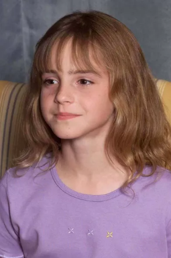

Emma Charlotte Duerre Watson naît dans le Marais à Paris le 15 avril 1990. Elle est la fille de Jacqueline Luesby, issue d'une famille vivant en France, et de Chris Watson, un couple d'avocats britanniques e xerçant en France ; elle passe ses cinq premières années à Maisons-Laffitte. Ses parents se séparent quelques années après la naissance en 1992 de son frère cadet Alexander Chris (Alex) Watson, en 1995. À la suite de ce divorce, elle emménage avec sa mère et son frère dans le comté d'Oxford en Angleterre. Sa mère se remarie avec Jonathan Taylor. Emma passe néanmoins les fins de semaine dans la maison de son père à Londres. Elle parle un peu français9, mais « pas aussi bien » que durant son enfance en France. Elle retourne occasionnellement en France, où vivent ses grands-parents. Outre son frère Alex, elle a deux demi-sœurs, les jumelles Lucy et Nina Watson (2004) et un demi-frère Toby Watson (2003), du côté de son père.
Elle passe ses années d'école primaire d'abord à la Lynams School, école maternelle de la Dragon School d'Oxford, de septembre 1995 à juin 1998, où on lui diagnostique un trouble déficitaire de l’attention avec hyperactivité. Elle va ensuite à la Dragon School, de septembre 1998 jusqu'en juin 2003. Elle suit des cours à temps partiel à Oxford au Stagecoach Theatre Arts, une école de théâtre où elle étudie le chant, la danse et le théâtre. C'est à cette période qu'elle commence le tournage de la saga Harry Potter. Lorsqu'elle arrive sur le tournage, elle n'a que 10 ans. Elle devient brusquement célèbre, et son école doit imposer un règlement spécial pour assurer sa tranquillité. Pour éviter que tous les élèves ne la harcèlent, ceux-ci n'ont donc pas le droit de lui demander un autographe, ni même de la solliciter, sous peine de recevoir des « points négatifs » pouvant se traduire par des sanctions disciplinaires. Ces dispositions ne s'appliquent toutefois pas à ses amis, mais à ceux qu'elle ne connaît pas.
Avant de jouer dans la série de films Harry Potter, elle était encore très jeune et son expérience de comédienne se limite à quelques rôles mineurs dans des pièces scolaires, par exemple Arthur : Les Jeunes Années et Le Prince Heureux. Parmi ses autres activités à l'école, on peut citer le Concours de Poésie Daisy Pratt, qu'elle remporte à l'âge de sept ans. En 1999, démarre le casting pour le film Harry Potter à l'école des sorciers. La jeune Emma est contactée par un agent de casting qui l'a découverte grâce à son professeur de théâtre. Pour décrocher son rôle dans les films de Harry Potter, elle passe huit auditions et est finalement sélectionnée parmi 35 000 candidates, les producteurs ayant été impressionnés par son assurance. Emma Watson est choisie pour jouer Hermione Granger, à l'âge de dix ans, dans le film Harry Potter à l'école des sorciers. Le film remporte un énorme succès au box-office dans plusieurs pays. Il est le plus rentable de l'année 2001. Les critiques trouvent son interprétation « admirable » (The Daily Telegraph), et IGN dit même qu'elle a piqué la vedette à ses co-stars. Elle a été proposée pour cinq prix pour son interprétation dans L'École des Sorciers, remportant le Young Artist Award.
Elle tourne également dans les films engagés Colonia et The Circle. Inspiré de faits réels, Colonia porte sur un groupe de personnes vivant en autarcie dans une colonie, selon ses propres règles, et dont les locaux abritent un centre de tortures à la solde de la dictature chilienne d'Augusto Pinochet. L'actrice britannique joue le rôle de Lena, une hôtesse de l'air de la Lufthansa, en couple avec un photographe membre des soutiens du président renversé Salvador Allende. Son amant va être capturé par les militaires à la solde de la junte, puis porté disparu. La jeune femme part à sa recherche, intègre la colonie pour le retrouver et tente de s'enfuir avec lui. Quant au film The Circle, réalisé d'après le roman homonyme de Dave Eggers, il dénonce le « système Google » et porte notamment sur le thème du respect de la vie privée. Elle joue le rôle de Mae Holland, personnage principal, employée de The Circle. Regression, Colonia et The Circle sont cependant plutôt mal reçus par la critique, selon le site Rotten Tomatoes.